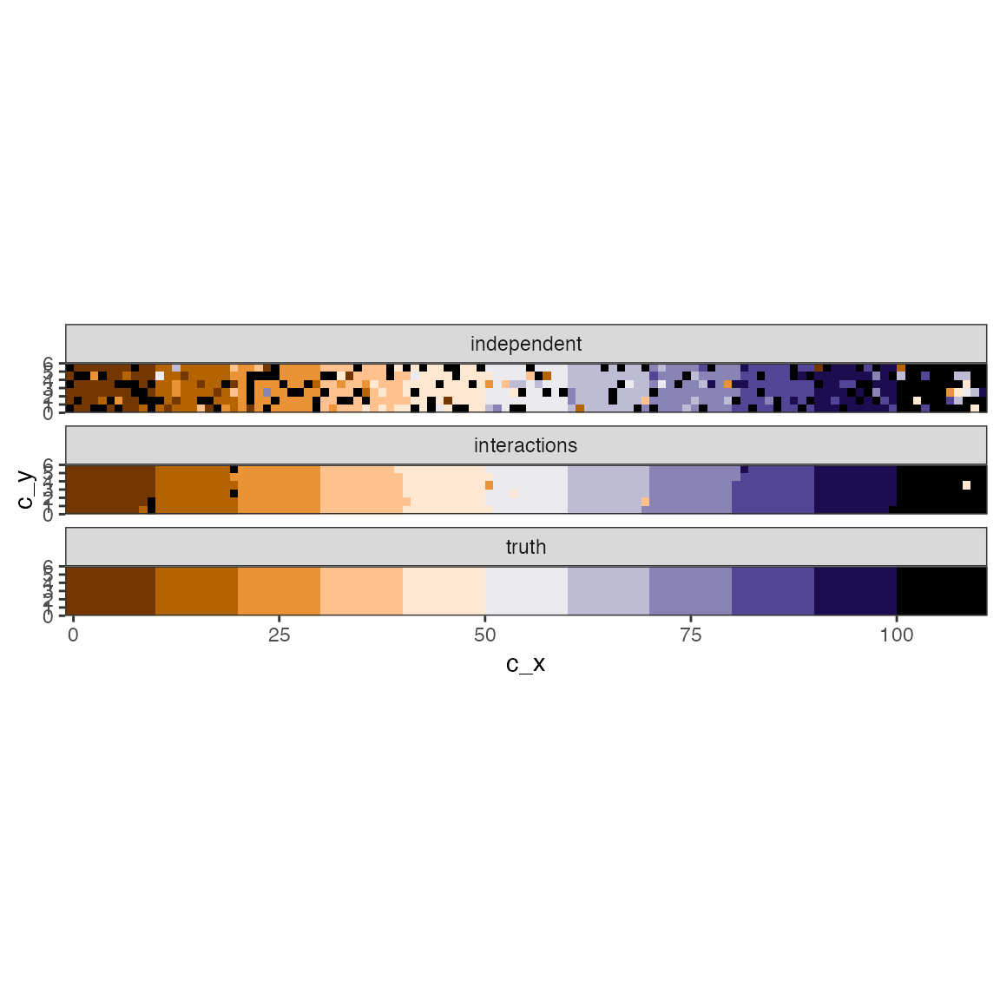
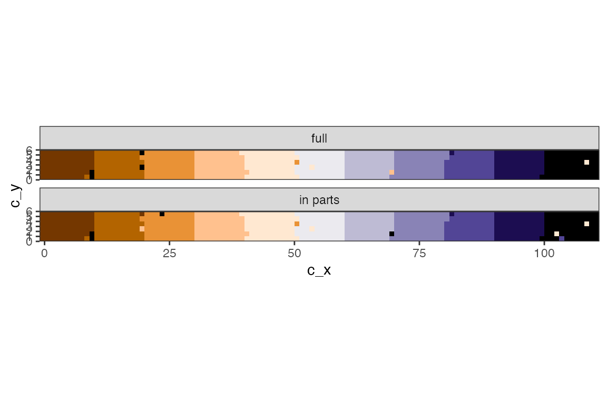

Example analysis
example_analysis.Rmd
library(tjdc)
library(dplyr)
library(tidyr)
library(posterior)
library(ggplot2)
library(sf)
theme_set(theme_bw())Data
Use the internal example, which is a datacube with clear blocks of changepoints.
data("easystripes")
x <- easystripes$strip
# the truth
j <- easystripes$jump
# as data frame
xdf <- tj_stars_to_data(x)
jdf <- as_tibble(j) |> rename(c_x = x, c_y = y, jump_after = values)
# add truth
df <- xdf |>
left_join( jdf )
#> Joining with `by = join_by(c_x, c_y)`
# Some examples
df_ex <- df |>
group_by(jump_after) |>
filter( cell %in% sample(unique(cell), 30) )This datacube has \(T=11\) timepoints, and a clear structure of where the changes take place.
plot( x )Here are examples of the series with different changepoints. Note that jumping after \(t=11\) is the same as not having a changepoint.
df_ex |>
ggplot() +
geom_line(aes(time, value, group = cell)) +
facet_wrap(~jump_after)Fit the model
The most up-to-date fitting function is at the moment called
tj_fit_m0.6
# set prior: negative jumps only.
p_d <- list(m = 0, s2 = 1e4, a = -Inf, b = 0)
fit0 <- tj_fit_m0.6(x,
prior_k = 0.9,
niter = 1000,
prior_delta = p_d,
verbose = TRUE)By default,
- The pixel-to-pixel ‘correlation’ term \(\gamma=0\) so no spatial
interaction is set (see
gamma) - The priors are pretty flat
- see
prior_thetafor the linear model parameters (2D Gaussian i.i.d. over pixels) - see
prior_deltafor the jump-size parameter, (1D truncated Gaussian i.i.d. over pixels) - see
prior_sigma2for residual variance (Gamma, one for all pixels) - see
prior_kthe prior probability of jumps; \(T\)-vector or 1 value for \(1-P(no~jump)\)
- see
-
all of the MCMC traces are kept in the output (see
keep_histparameter in the help).
The proposed model is activated by setting \(\gamma\neq 0\):
fit1 <- tj_fit_m0.6(x,
gamma = 0.6,
prior_k = 0.9,
niter = 1000,
prior_delta = p_d,
verbose = TRUE)There are many components in the result object, but most importantly the posteriors are in
-
k: The posterior probabilities for a jump, in formatk[t,i]. So for example, the probability of no jump of pixel 1 when \(T=11\) is ink[1,11]. The probability of a jump somewhere is also returned in componentz -
theta_m,theta_Suppetri: The posterior mean and (upper triangle of) covariance for the vector \((\theta,\delta)\) (regression + jump) -
sigma2: Residual variance
Example: Check convergence.
# example cell:
c <- 123
tr <- cbind(fit1$hist_theta[,c,],
fit1$hist_z[,c],
fit1$hist_sigma2) |>
as.data.frame() |>
setNames(c("a", "b", "d", "P(jump)", "sigma2"))
# use `posterior` etc.
trp <- as_draws(tr[-(1:500),])
summary( trp )
#> # A tibble: 5 × 10
#> variable mean median sd mad q5 q95 rhat ess_bulk ess_tail
#> <chr> <num> <num> <num> <num> <num> <num> <num> <num> <num>
#> 1 a 99.1 98.6 11.3 11.3 79.8 119. 1.14 5.65 53.6
#> 2 b 0.378 0.380 1.19 1.18 -1.58 2.26 1.06 18.9 132.
#> 3 d -31.0 -30.8 13.8 13.3 -54.1 -7.55 1.22 3.92 33.3
#> 4 P(jump) 0.998 1 0.0223 0 0.997 1 1.13 7.19 NA
#> 5 sigma2 104. 104. 1.91 1.89 101. 107. 1.01 306. 409.
tr |>
mutate(iter = 1:n()) |>
pivot_longer(-iter) |>
ggplot() +
geom_line(aes(iter, value)) +
facet_wrap(~name, scale = "free_y")Example: get the most likely jump times.
pk0_most_likely <- apply(fit0$k, 2, which.max)
pk1_most_likely <- apply(fit1$k, 2, which.max)
pk0df <- fit0$cell_info |> mutate(jump_after = pk0_most_likely)
pk1df <- fit1$cell_info |> mutate(jump_after = pk1_most_likely)Compare to truth:
# Gather estimates
df_o <- bind_rows(pk0df |> mutate(model = "independent"),
pk1df |> mutate(model = "interactions"),
df |> filter(time == 1) |> mutate(model = "truth")) |>
mutate(est = factor(jump_after))
# pretty color
cc <- c(hcl.colors(10, palette = "PuOr"), "black")
# Plot
df_o |>
ggplot() +
geom_raster(aes(c_x, c_y, fill = est), show.legend = FALSE) +
coord_fixed(expand = FALSE) +
scale_fill_manual(values = cc ) +
facet_wrap(~model, ncol = 1)
Naive parallelisation
Large dimension cube can be split into smaller cubes at the spatial domain (raster), and model fitted to each subset separately and independently, facilitating simple parallelisation. Due to the spatial dependency structure, it is a good idea to overlap the regions a bit. There are three useful functions here:
-
tj_divide_raster: Create the geometry of the subsets -
tj_fit_m0.x: Fit a model to each subset, and handle collection and possible storage writing -
tj_stitcher_m0.x: Collect the results.
First we want to create the mosaic.
tiling <- tj_divide_raster(x, n = c(3, 1), buffer = c(1, 1))The result contains info on the tiling. For example, sf
polygons of the tiles are available.
tiling$poly |>
ggplot() +
geom_sf( data = st_bbox(x) |> st_as_sfc() , fill = "orange") +
geom_sf(alpha = .5) +
geom_sf_text(aes(label = id)) +
expand_limits(y = c(-2, 8) )Here we have split the raster bounding box into \(3\)-columns-\(1\)-rows separate boxes, with overlap of 2 pixels.
Then we use the wrapper to fit the model on each subset.
fitm_l <- tj_fit_m0.x(x,
timevar = "z",
tiling = tiling,
niter = 1000,
prior_k = 0.9,
gamma = .6,
prior_delta = p_d,
model_variant = "m0.6",
ncores = 3)
#> [m0.x 3c][1/1][ave time 5.385954 secs, -4.8e-05 secs left, ready 2023-06-01 15:49:51]
#> [m0.x 3c][1/1][ave time 5.385954 secs][total time: 5.387261 secs]By default all stuff is kept in memory. See the documentation on how to store each fit into custom file location.
The result is a list of fits, and needs to be parsed together, particularly the pixels in the overlapping sections need to be made unique.
# parse the results from separate tiles
fitm <- tj_stitcher_m0.x(fitm_l, tiling)Which has a similar structure as the earlier examples.
pkm_most_likely <- apply(fitm$k, 2, which.max)
pkmdf <- fitm$cell_info |>
# this table contains duplicate rows for cells in the overlaps
group_by(cell) |>
filter(row_number() == 1) |>
ungroup() |>
left_join(
tibble( cell = fitm$cells, jump_after = pkm_most_likely ) )
#> Joining with `by = join_by(cell)`
# Gather estimates
df_o2 <- bind_rows(pk1df |> mutate(model = "full"),
pkmdf |> mutate(model = "in parts") ) |>
mutate(est = factor(jump_after))
# Plot
df_o2 |>
ggplot() +
geom_raster(aes(c_x, c_y, fill = est), show.legend = FALSE) +
coord_fixed(expand = FALSE) +
scale_fill_manual(values = cc ) +
facet_wrap(~model, ncol = 1) 
Note that for parallel fits the variance parameters will be estimated separately.
s2 <- fitm$hist_sigma2 |> as_draws()
colnames(s2) <- paste0("sigma2_", 1:3)
summary(s2)
#> # A tibble: 3 × 10
#> variable mean median sd mad q5 q95 rhat ess_bulk ess_tail
#> <chr> <num> <num> <num> <num> <num> <num> <num> <num> <num>
#> 1 sigma2_1 108. 105. 25.5 3.92 99.2 115. 1.06 12.2 10.8
#> 2 sigma2_2 110. 107. 29.9 3.85 101. 115. 1.01 75.7 19.0
#> 3 sigma2_3 104. 101. 26.8 3.88 94.9 107. 1.01 140. 36.9